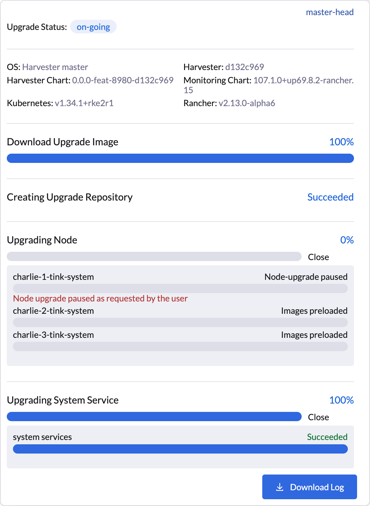
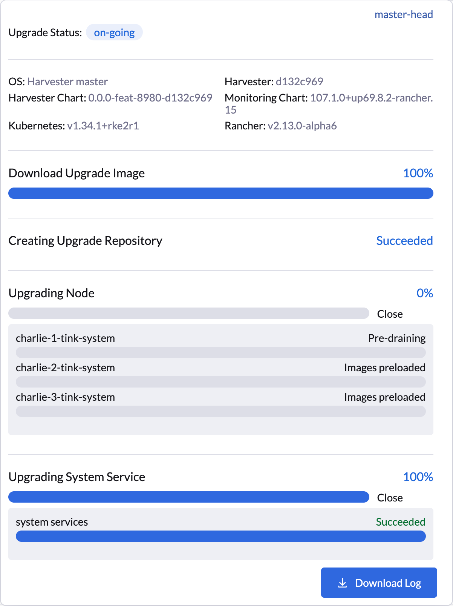

|
Este documento foi traduzido usando tecnologia de tradução automática de máquina. Sempre trabalhamos para apresentar traduções precisas, mas não oferecemos nenhuma garantia em relação à integridade, precisão ou confiabilidade do conteúdo traduzido. Em caso de qualquer discrepância, a versão original em inglês prevalecerá e constituirá o texto official. |
Upgrades
SUSE Virtualization está adotando uma nova estratégia de ciclo de vida que simplifica a gestão de versões e o upgrade. Essa estratégia inclui o seguinte:
-
Ciclo de lançamento menor de quatro meses
-
Ciclo de lançamento de patch de dois meses
-
Política de adoção de componentes
|
SUSE Virtualization não suporta downgrades. Essa restrição ajuda a prevenir comportamentos inesperados do sistema e problemas associados à incompatibilidade de funções, descontinuação e remoção. |
Caminhos de fazer upgrade
A tabela a seguir descreve os caminhos de fazer upgrade suportados.
| Versão Instalada | Versões de Upgrade Suportadas |
|---|---|
v1.6.x |
|
v1.6.x |
v1.6.y (y é maior que x) |
v1.5.x |
|
v1.5.0 e v1.5.1 |
|
v1.5.0 |
|
v1.4.2 e v1.4.3 |
|
v1.4.2 e v1.4.3 |
|
v1.4.1 e v1.4.2 |
|
v1.4.1 |
|
v1.4.0 |
|
v1.3.1 |
|
v1.2.2 e v1.3.0 |
|
v1.2.1 |
|
v1.1.2, v1.1.3 e v1.2.0 |
As versões mais recentes do SUSE Virtualization permitem o seguinte:
-
Atualizar de uma versão menor para a próxima (por exemplo, de v1.5.2 para v1.6.1) sem precisar instalar os patches lançados entre as duas versões. Isso é possível porque SUSE Virtualization permite um máximo de uma atualização de versão menor para componentes subjacentes.
-
Atualizar para uma versão de patch mais recente (por exemplo, de v1.6.0 para v1.6.1), assumindo que as mesmas versões de componentes são usadas nas versões para uma determinada versão menor.
A tabela a seguir descreve os componentes usados nessas versões:
| Componente | SUSE Virtualization v1.5.x | SUSE Virtualization v1.6.x | SUSE Virtualization v1.7.x |
|---|---|---|---|
KubeVirt |
v1.4 |
v1.5 |
v1.6 |
SUSE Storage |
v1.8 |
v1.9 |
v1.10 |
SUSE Rancher Prime |
v2.11 |
v2.12 |
v2.13 |
RKE2 |
v1.32 |
v1.33 |
v1.34 |
SUSE Linux Micro |
5.5 |
5.5 |
6.1 |
|
Pular várias versões menores do Kubernetes não é suportado upstream e é uma das principais razões para os caminhos de upgrade limitados. Para mais informações, consulte Política de Desvio de Versão na documentação do Kubernetes. |
Rancher upgrade
Se você estiver usando Rancher para gerenciar seu cluster SUSE Virtualization, deve fazer upgrade Rancher antes de fazer upgrade SUSE Virtualization.
|
Os processos de upgrade do SUSE Virtualization e do Rancher são independentes um do outro. Durante um upgrade do Rancher, você ainda pode acessar seu cluster SUSE Virtualization usando seu IP virtual. SUSE Virtualization não é atualizado automaticamente. |
Quando uma versão do Rancher atinge sua data de Fim de Manutenção (EOM), SUSE Virtualization fornece apenas correções para problemas críticos de segurança que afetam funções de integração (Gerenciamento de Virtualização). Para mais informações, consulte o Matiz de Suporte.
Gerenciamento de Máquinas Virtuais através do Fazer Upgrade
Máquinas Virtuais Migráveis ao Vivo
Máquinas virtuais migráveis ao vivo são automaticamente migradas para outros nós via migração em lote antes que o nó atual seja atualizado. Essas máquinas virtuais não experienciam tempo de inatividade durante a migração.
Máquinas Virtuais Não Migráveis
Quando um upgrade é acionado, SUSE Virtualization realiza certas ações dependendo do valor da opção upgrade-config da configuração restoreVM.
-
false: SUSE Virtualization não realiza o upgrade quando máquinas virtuais não migráveis ainda estão em execução. Você deve desligar manualmente as máquinas virtuais. -
true: SUSE Virtualization desliga automaticamente as máquinas virtuais não migráveis quando o nó é atualizado e, em seguida, as restaura após o nó ser reiniciado.
|
Máquinas virtuais não migráveis experienciam tempo de inatividade durante a migração. |
Para mais informações, consulte Fase 4: Atualizar nós.
Antes de iniciar um upgrade
Verifique a configuração disponível upgrade-config para ajustar as estratégias e comportamentos de atualização que melhor se adequam ao seu ambiente de cluster.
Inicie um upgrade
|
|
|
As NICs que se conectam a um barramento PCI podem ser renomeadas após uma atualização. Por favor, verifique o artigo da base de conhecimento para mais informações. |
|
A partir da versão v1.7.0, SUSE Virtualization utiliza um repositório de atualização baseado em implantação em vez de uma abordagem baseada em máquina virtual para melhorar o desempenho e a confiabilidade. Para mais informações, consulte o problema #7101. |
-
Na tela SUSE Virtualization da interface Dashboard, clique em Upgrade.
O botão Atualizar aparece sempre que uma nova versão à qual você pode atualizar se torna disponível.
Se o seu ambiente não tiver acesso direto à internet, siga as instruções em [Prepare an air-gapped upgrade], que fornece uma abordagem eficiente para baixar o ISO.

-
Selecione a versão para a qual deseja fazer upgrade.
Se você precisar de personalizações, consulte [Customize the version].

-
Clique no indicador de progresso (ícone circular) para ver o status de cada processo relacionado.

Personalize a versão
-
Baixe o arquivo da versão (
https://releases.rancher.com/harvester/{version}/version.yaml).Exemplo:
O arquivo da versão v1.5.0 é baixado como
v1.5.0.yaml.apiVersion: harvesterhci.io/v1beta1 kind: Version metadata: name: v1.5.0-customized # Changed, to avoid duplicated with the official version name namespace: harvester-system spec: isoChecksum: 'df28e9bf8dc561c5c26dee535046117906581296d633eb2988e4f68390a281b6856a5a0bd2e4b5b988c695a53d0fc86e4e3965f19957682b74317109b1d2fe32' # Don't change isoURL: https://releases.rancher.com/harvester/v1.5.0/harvester-v1.5.0-amd64.iso # Official ISO path by default releaseDate: '20250425' -
Crie a versão usando o comando
kubectl create -f v1.5.0.yaml.
Prepare um upgrade air-gapped
|
Certifique-se de verificar a seção [Upgrade paths] primeiro sobre as versões atualizáveis. |
Prepare o arquivo ISO
-
Baixe um arquivo ISO da página Releases.
-
Salve o ISO em um servidor HTTP local.
Assuma que o arquivo está hospedado em
http://10.10.0.1/harvester.iso.
Prepare a Versão
-
Baixe o arquivo da versão (
https://releases.rancher.com/harvester/{version}/version.yaml). -
Substitua o valor
isoURLno arquivo.apiVersion: harvesterhci.io/v1beta1 kind: Version metadata: name: v1.5.0 namespace: harvester-system spec: isoChecksum: <SHA-512 checksum of the ISO> isoURL: http://10.10.0.1/harvester.iso # change to local ISO URL releaseDate: '20250425'Assuma que o arquivo está hospedado em
http://10.10.0.1/version.yaml. Se você precisar de personalizações, veja [Customize the version]. -
Acesse um dos nós do plano de controle via SSH e faça login usando a conta root.
-
Crie um objeto de versão.
rancher@node1:~> sudo -i rancher@node1:~> kubectl create -f http://10.10.0.1/version.yaml
Inicie manualmente um upgrade antes que o upgrade oficial se torne disponível.
O botão Upgrade não aparece na interface imediatamente após uma nova versão ser lançada. Se você quiser fazer upgrade do seu cluster antes que a opção se torne disponível na interface, siga os passos em [Prepare an air-gapped upgrade].
|
Em ambientes de produção, é recomendado fazer upgrade dos clusters via a interface. |
Personalize as atualizações dos nós
As atualizações SUSE Virtualization envolvem várias fases definidas. Uma fase chave é a atualização dos nós, durante a qual o sistema operacional e a distribuição subjacente do Kubernetes (RKE2) são atualizados em cada nó sequencialmente e de forma autônoma.
Você tem a opção de pausar atualizações automáticas em nós específicos, útil para tarefas de manutenção ou verificação manuais. Após a conclusão dessas tarefas, você deve instruir explicitamente SUSE Virtualization a retomar o upgrade nos nós-alvo.
Pausando atualizações dos nós
Você pode usar a opção nodeUpgradeOption na configuração upgrade-config para pausar as atualizações dos nós.
-
Pausar para todos os nós no cluster: Altere o valor do campo
modeparamanual. -
Pausa para nós específicos: Liste os nomes dos nós no campo
pauseNodes. Nós não incluídos na lista são automaticamente atualizados.
|
SUSE Virtualization aplica a configuração |
|
Você pode modificar o recurso personalizado |
A interface do usuário SUSE Virtualization fornece confirmação visual das atualizações de nós pausadas. No exemplo a seguir, a atualização do nó charlie-1-tink-system está atualmente pausada.

Você também pode usar o seguinte kubectl comando para verificar as atualizações de nós pausadas.
$ kubectl -n harvester-system get upgrades -l harvesterhci.io/latestUpgrade=true -o yaml
...
annotations:
harvesterhci.io/node-upgrade-pause-map: '{"charlie-1-tink-system":"pause","charlie-2-tink-system":"pause","charlie-3-tink-system":"pause"}'
...
nodeStatuses:
charlie-1-tink-system:
message: Node upgrade paused as requested by the user
reason: AdministrativelyPaused
state: Node-upgrade paused
charlie-2-tink-system:
state: Images preloaded
charlie-3-tink-system:
state: Images preloaded
...|
Os trabalhos de pré-drain para nós com atualizações pausadas não foram criados. No entanto, esses nós ainda estão isolados e você não poderá executar novas cargas de trabalho neles. Apenas tarefas de manutenção, como desligar manualmente máquinas virtuais, devem ser realizadas em nós com atualizações pausadas. |
Retomando uma atualização de nó pausada
Você pode retomar uma atualização de nó pausada atualizando a anotação harvesterhci.io/node-upgrade-pause-map no recurso personalizado Upgrade.
Exemplo:
# Find out the latest Upgrade custom resource
$ kubectl -n harvester-system get upgrades -l harvesterhci.io/latestUpgrade=true
NAME AGE
hvst-upgrade-6mcwv 4h16m
# Update the annotation to unpause the node
$ kubectl -n harvester-system annotate --overwrite upgrades hvst-upgrade-6mcwv harvesterhci.io/node-upgrade-pause-map='{"charlie-1-tink-system":"unpause","charlie-2-tink-system":"pause","charlie-3-tink-system":"pause"}'Uma vez que o nó de destino esteja anotado no recurso personalizado Upgrade, SUSE Virtualization retoma a atualização imediatamente, com a interface do usuário exibindo atualizações visuais de progresso.

Você também pode usar o seguinte kubectl comando para verificar o estado do nó de destino:
$ kubectl -n harvester-system get upgrades -l harvesterhci.io/latestUpgrade=true -o yaml
...
annotations:
harvesterhci.io/node-upgrade-pause-map: '{"charlie-1-tink-system":"unpause","charlie-2-tink-system":"pause","charlie-3-tink-system":"pause"}'
...
nodeStatuses:
charlie-1-tink-system:
state: Pre-draining
charlie-2-tink-system:
state: Images preloaded
charlie-3-tink-system:
state: Images preloaded
...Dependendo do número de nós de destino, pode ser necessário executar a operação de despausar várias vezes durante o processo geral de atualização do cluster.
Requisito de espaço livre na partição do sistema
SUSE Virtualization carrega imagens em cada nó durante as atualizações. Quando o uso do disco excede o limite de coleta de lixo do kubelet, o kubelet exclui imagens não utilizadas para liberar espaço. Isso pode causar problemas em ambientes air-gapped, pois as imagens não estão disponíveis no nó.
SUSE Virtualization inclui verificações que garantem que os nós não acionem a coleta de lixo após carregar novas imagens.
Quando o espaço em disco é insuficiente, SUSE Virtualization bloqueia a atualização e retorna um erro semelhante ao seguinte:
Node "harvester-node-0" will reach 92.84% storage space after loading new images. It's higher than kubelet image garbage collection threshold 85%.Se você quiser tentar atualizar mesmo que o espaço livre na partição do sistema seja insuficiente em alguns nós, pode atualizar a anotação harvesterhci.io/skipGarbageCollectionThresholdCheck: true do objeto Upgrade.
apiVersion: harvesterhci.io/v1beta1
kind: Upgrade
metadata:
annotations:
harvesterhci.io/skipGarbageCollectionThresholdCheck: true
generateName: hvst-upgrade-
namespace: harvester-system
spec:
version: "1.6.0"
logEnabled: true|
Definir um valor menor do que o valor pré-definido pode causar a falha da atualização e não é recomendado em um ambiente de produção. |
As seções a seguir descrevem soluções para problemas relacionados a esse requisito.
Liberar espaço na partição do sistema manualmente
SUSE Virtualization tenta remover imagens de contêiner desnecessárias após a conclusão da atualização. No entanto, essa limpeza automática de imagens pode não ser realizada por vários motivos. Você pode usar um script para remover imagens manualmente. Para mais informações, consulte o problema #6620.
Configure um registro de contêiner privado e pule o pré-carregamento de imagens
A partição do sistema ainda pode não ter espaço livre mesmo após a remoção de imagens. Para resolver isso, configure um registro de contêiner privado para imagens atuais e novas, e configure a configuração upgrade-config com o seguinte valor:
{"imagePreloadOption":{"strategy":{"type":"skip"}}, "restoreVM": false}SUSE Virtualization pula o processo de pré-carregamento da imagem de atualização. Quando as implantações nos nós são atualizadas, o tempo de execução do contêiner carrega as imagens armazenadas no registro de contêiner privado.
|
Não confie no registro de contêiner público. Observe quaisquer interrupções potenciais no serviço de internet e quão próximo você está de atingir o limite de taxa do Docker Hub. A falha ao baixar qualquer uma das imagens necessárias pode causar a falha da atualização e deixar o cluster em um estado intermediário. |
Verificação de expiração de certificados
SUSE Virtualization verifica o período de validade dos certificados em cada nó. Essa verificação elimina a possibilidade de os certificados expirarem enquanto a atualização está em andamento. Se um certificado expirar dentro de 7 dias, um erro é retornado. Esse comportamento pode ser substituído definindo a anotação harvesterhci.io/minCertsExpirationInDay.
Exemplo:
apiVersion: harvesterhci.io/v1beta1
kind: Upgrade
metadata:
annotations:
harvesterhci.io/minCertsExpirationInDay: "14"
generateName: hvst-upgrade-
namespace: harvester-system
spec:
version: "1.6.0"
logEnabled: trueQuando essa anotação é adicionada ao objeto Upgrade, SUSE Virtualization retorna um erro quando detecta um certificado que expirará dentro de 14 dias.
Para mais informações, veja auto-rotate-rke2-certs.
Compatibilidade de backup de máquina virtual
Você pode encontrar certas limitações ao criar e restaurar backups que envolvem armazenamento externo.
Falha do Longhorn Manager devido à evicção de imagem de apoio
|
Ao atualizar para SUSE Virtualization v1.4.x, o Longhorn Manager pode falhar se a flag Para evitar que o problema ocorra, certifique-se de que a flag |
Reative os webhooks de admissão do ingress-nginx do RKE2 (CVE-2025-1974)
Se você desativou os webhooks de admissão do ingress-nginx do RKE2 para mitigar CVE-2025-1974, você deve reativar o webhook após atualizar para SUSE Virtualization v1.5.0 ou posterior.
-
Verifique se SUSE Virtualization está usando nginx-ingress v1.12.1 ou posterior.
$ kubectl -n kube-system get po -l"app.kubernetes.io/name=rke2-ingress-nginx" -ojsonpath='{.items[].spec.containers[].image}' rancher/nginx-ingress-controller:v1.12.1-hardened1 -
Execute
kubectl -n kube-system edit helmchartconfig rke2-ingress-nginxpara remover as seguintes configurações do recursoHelmChartConfig.-
.spec.valuesContent.controller.admissionWebhooks.enabled: false -
.spec.valuesContent.controller.extraArgs.enable-annotation-validation: true
-
-
Verifique se a nova configuração
.spec.ValuesContenté semelhante ao exemplo a seguir.apiVersion: helm.cattle.io/v1 kind: HelmChartConfig metadata: name: rke2-ingress-nginx namespace: kube-system spec: valuesContent: |- controller: admissionWebhooks: port: 8444 extraArgs: default-ssl-certificate: cattle-system/tls-rancher-internal config: proxy-body-size: "0" proxy-request-buffering: "off" publishService: pathOverride: kube-system/ingress-exposeSe o recurso
HelmChartConfigcontiver outras configurações personalizadasingress-nginx, você deve mantê-las ao editar o recurso. -
Saia da execução do comando
kubectl editpara salvar a configuração.SUSE Virtualization aplica automaticamente a alteração assim que o conteúdo é salvo.
-
Verifique se a configuração do webhook
rke2-ingress-nginx-admissionestá reativada.$ kubectl get validatingwebhookconfiguration rke2-ingress-nginx-admission NAME WEBHOOKS AGE rke2-ingress-nginx-admission 1 6s -
Verifique se os pods
ingress-nginxforam reiniciados com sucesso.kubectl -n kube-system get po -lapp.kubernetes.io/instance=rke2-ingress-nginx NAME READY STATUS RESTARTS AGE rke2-ingress-nginx-controller-l2cxz 1/1 Running 0 94s
A atualização está presa no estado "Pré-drenado".
O processo de atualização pode ficar preso no estado "Pré-drenado". O Kubernetes deve drenar a carga de trabalho no nó, mas alguns fatores podem causar a paralisação do processo.

Uma possível causa são processos relacionados a motores órfãos do Longhorn Instance Manager. Para determinar se isso se aplica à sua situação, execute os seguintes passos:
-
Verifique o nome do pod
instance-managerno nó preso.Exemplo:
O nó preso é
harvester-node-1, e o nome do pod do Longhorn Instance Manager éinstance-manager-d80e13f520e7b952f4b7593fc1883e2a.$ kubectl get pods -n longhorn-system --field-selector spec.nodeName=harvester-node-1 | grep instance-manager instance-manager-d80e13f520e7b952f4b7593fc1883e2a 1/1 Running 0 3d8h -
Verifique os logs do Longhorn Manager em busca de mensagens informativas.
Exemplo:
$ kubectl -n longhorn-system logs daemonsets/longhorn-manager ... time="2025-01-14T00:00:01Z" level=info msg="Node instance-manager-d80e13f520e7b952f4b7593fc1883e2a is marked unschedulable but removing harvester-node-1 PDB is blocked: some volumes are still attached InstanceEngines count 1 pvc-9ae0e9a5-a630-4f0c-98cc-b14893c74f9e-e-0" func="controller.(*InstanceManagerController).syncInstanceManagerPDB" file="instance_manager_controller.go:823" controller=longhorn-instance-manager node=harvester-node-1O pod
instance-managernão pode ser drenado devido ao motorpvc-9ae0e9a5-a630-4f0c-98cc-b14893c74f9e-e-0. -
Verifique se o motor ainda está em execução no nó preso.
Exemplo:
$ kubectl -n longhorn-system get engines.longhorn.io pvc-9ae0e9a5-a630-4f0c-98cc-b14893c74f9e-e-0 -o jsonpath='{"Current state: "}{.status.currentState}{"\nNode ID: "}{.spec.nodeID}{"\n"}' Current state: stopped Node ID:O problema provavelmente existe se a saída mostrar que o motor não está em execução ou não foi encontrado.
-
Verifique se todos os volumes estão saudáveis.
kubectl get volumes -n longhorn-system -o yaml | yq '.items[] | select(.status.state == "attached")| .status.robustness'Todos os volumes devem estar marcados como
healthy. Se este não for o caso, reporte o problema. -
Remova o PodDisruptionBudget (PDB) do pod
instance-manager.Exemplo:
kubectl delete pdb instance-manager-d80e13f520e7b952f4b7593fc1883e2a -n longhorn-system
Problemas relacionados:
Falha na migração ao vivo no estado "Pré-drenado"
A migração ao vivo de máquinas virtuais pode falhar quando o nó em atualização estiver isolado durante o estado de pré-drenagem. Uma causa comum é a falta de nós-alvo compatíveis devido a regras de anti-affinity rigorosas.
Quando isso acontece, SUSE Virtualization desliga automaticamente essas máquinas virtuais para desbloquear a atualização e evitar que o processo reinicie de forma insegura.
Snapshots e backups SUSE Storage recorrentes não são suportados
Snapshots e backups SUSE Storage recorrentes não estão integrados ao SUSE Virtualization. Se você decidir usar esse recurso, deve desativar todos os trabalhos de instantâneo e backup recorrentes em SUSE Storage antes de iniciar a atualização.
Para mais informações sobre a incompatibilidade, veja Backups e instantâneos de máquinas virtuais agendados.